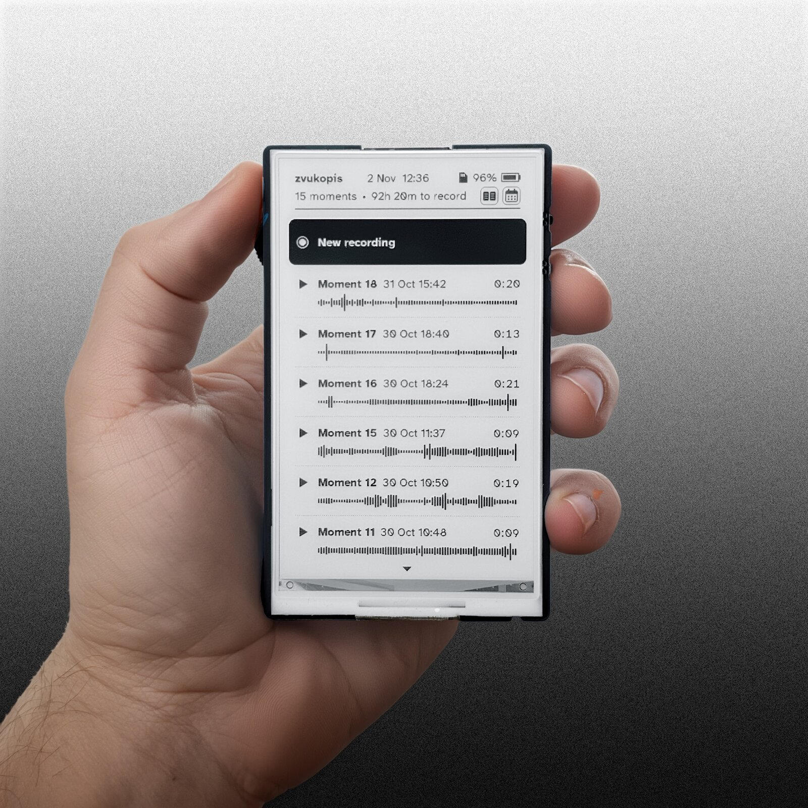
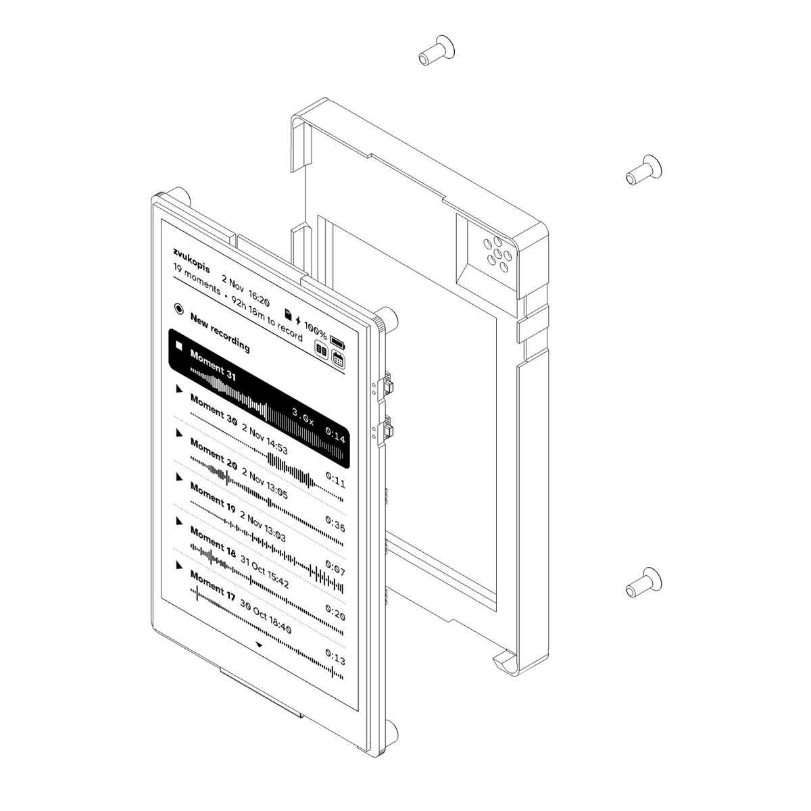

Open source, DIY
A Waveshare e-ink board in a 3D-printed case, an SD card, a USB cable and a browser. MIT licence; the code is on GitHub.
an open source, DIY e-ink field recorder · a LOM project

Simple mono pocket field recorder with e-ink screen
Firmware for the Waveshare ESP32-S3-ePaper-3.97 board. Open source, installed from this page in a minute.
A Waveshare e-ink board in a 3D-printed case, an SD card, a USB cable and a browser. MIT licence; the code is on GitHub.
Plain WAV files, up to 6 hours each, with embedded time of the day timecode. Microphone bandwidth to 40 kHz.
Frequency analysis of any recording on the device, 0 to 48 kHz, with adjustable contrast.
Record from a phone, download or back everything up, and set recordings to start by themselves, even from sleep.
No notifications, no apps, no account, no feed. Assemble your own calm field recorder.
The side switch does everything: up or down, press in, hold in.
doc folder open on the screen, for the quiet between recordings.The Waveshare board, its speaker and battery, and a 3D-printed case bolted to the board's standoffs. LOM does not sell the board or a kit: you buy the board yourself and print the case.

What you need
Putting it together
Then install the firmware, below.
Loading the firmware version…
No Install button here. This browser can't talk to USB ports. Open this page in Chrome or Edge on a computer (not on a phone) and the button appears.
Chrome or Edge on a computer, the board on a USB cable.
The firmware holds no Wi-Fi credentials; the device asks for your network the first time, with a QR code on its screen. Settings on the device shows the version it runs; Settings > Firmware update shows the way back here.
Warning. Experimental firmware. Written by an AI (Claude) with Jonáš Gruska, tested on the device as it went, never audited. It may lose a recording, drain the battery or fail in a way nobody has seen yet. No warranty of any kind.